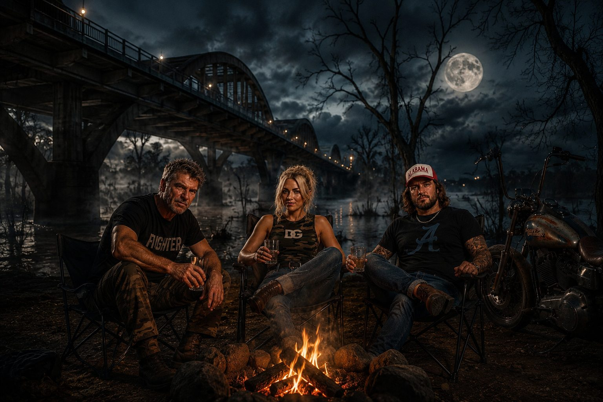

The Story
Out of Slapout
From the Montgomery, Alabama area, Slapout is the stretch of red dirt and river road Nashville drives past without slowing down. Not the postcard South. The other one.
A slide guitar. A gospel voice. A country line. Then the floor drops. Poverty, paranoia, dope smoke, backroad theology, busted humor, and Southern survival translated into sound.
Sounds like Eazy-E raised up in Slapout by Hank Williams Jr., then run off to Memphis with the country-rap boys coming up off the street.
